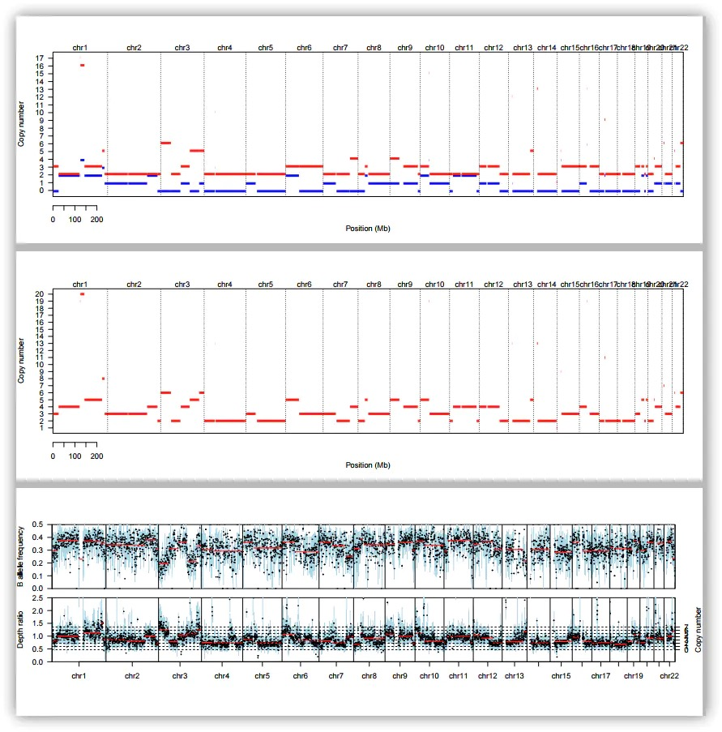

介绍
- 说明文档：https://cran.r-project.org/web/packages/sequenza/vignettes/sequenza.html
- 说明文档：https://bitbucket.org/sequenzatools/sequenza/src/master/
该软件包括两个部分: + a python-based preprocessing tool + an R package implementing the model fitting and visualization functions
python脚本部分可以分成2个步骤： + First, it calculates the GC content in sliding windows from a genome reference file in FASTA format. + Second, it processes the sequencing data from the tumor and normal specimens, which must be in the Pileup format, as output by SAMtools
R包的流程也可以分成3个步骤： + first, . extract efficiently reads the input file into R, performs GC-content normalization of the tumor versus normal depth ratio, and performs allele-specific segmentation using the ‘copynumber’ package. + Second, .fit applies the model to infer cellularity and ploidy parameters and copy number profiles. Finally, .results returns the results of the estimation together with alternative solutions and visualization of the data and the model along the genome and the individual chromosomes.
https://cran.r-project.org/web/packages//vignettes/.pdf
安装
source("https://bioconductor.org/biocLite.R")
biocLite("copynumber")
install.packages("")
Workflow overview
Generating a genome-wide GC content file
/local_data1/work/zhangbo/software/R-3.5.1/library//exec/-utils.py
−utils.py GC−windows −w 50 hg19.fa | gzip > hg19.gc50Base.txt.gz
(http://hgdownload-test.cse.ucsc.edu/goldenPath/hg19/gc5Base/).
A typical workflow developed with on pre-aligned sequencing files (BAM format) is structured as follows: Generating pileup files from BAM files
samtools mpileup −f hg19.fasta −Q 20 normal.bam | gzip > normal.pileup.gz
samtools mpileup −f hg19.fasta −Q 20 tumor.bam | gzip > tumor.pileup.gz
Generate a seqz file
- Convert pileup to seqz format
- Converting VarScan2 output to seqz
snp <- read.table("varscan.snp", header = TRUE, sep = "\t")
cnv <- read.table("varscan.copynumber", header = TRUE, sep = "\t")
seqz.data <- VarScan2seqz(varscan.somatic = snp, varscan.copynumber = cnv)
write.table(seqz.data, "my.sample.seqz", col.names = TRUE, row.names = FALSE, sep = "\t")
for exome sequencing, we recommend that you supply varscan.copynumber.
Exploring the seqz file and depth ratio nor-malization details
1. Quality control
library()
data.file <- system.file("data", "example.seqz.txt.gz", package = "")
seqz.data <- read.seqz(data.file)
> str(seqz.data)
'data.frame': 53937 obs. of 14 variables:
$ chromosome : chr "1" "1" "1" "1" ...
$ position : int 866168 878255 880150 881992 884173 886261 900298 900632 902140 909313 ...
$ base.ref : chr "C" "T" "G" "G" ...
$ depth.normal : int 7 21 9 53 80 9 105 105 30 41 ...
$ depth.tumor : int 10 10 16 37 61 10 78 72 14 16 ...
$ depth.ratio : num 1.429 0.476 1.778 0.698 0.762 ...
$ Af : num 0.9 0.9 0.9 0.514 0.586 0.9 0.837 0.629 0.5 0.6 ...
$ Bf : num 0 0 0 0.486 0.397 0 0 0.371 0 0.4 ...
$ zygosity.normal: chr "hom" "hom" "hom" "het" ...
$ GC.percent : num 66 72 54 63 64 65 69 63 72 68 ...
$ good.reads : num 10 10 10 35 58 10 43 35 10 15 ...
$ AB.normal : chr "C" "T" "G" "AC" ...
$ AB.tumor : chr "A0.1" "G0.1" "C0.1" "." ...
$ tumor.strand : chr "A1.0" "G1.0" "C0.0" "0" ...
Each aligned base, in the next generation sequencing, is associated with a quality score. The -utils.py software is capable of filtering out bases with a quality score lower then a specified value (default, 20). The number of reads that have passed the filter is returned in the column good.reads, while the depth.tumor column contains the raw depth indicated in the pileup.-utils.py脚本能够过滤掉质量低于20的碱基。在good.reads一列表示了通过过滤条件的reads数目。但是depth.tumor列是包含了原始reads数目。
2. Quality control
3. Normalization of depth ratio
We attempt to remove this bias by normalizing with the mean depth ratio value of a corresponding GC content value.
gc.stats <- gc.sample.stats(data.file)
str(gc.stats)
gc.stats <- gc.norm(x = seqz.data$depth.ratio, gc = seqz.data$GC.percent)
#或者
gc.vect <- setNames(gc.stats$raw.mean, gc.stats$gc.values)
seqz.data$adjusted.ratio <- seqz.data$depth.ratio / gc.vect[as.character(seqz.data$GC.percent)]
图形：
par(mfrow = c(1,2), cex = 1, las = 1, bty = 'l')
matplot(gc.stats$gc.values, gc.stats$raw, type = 'b', col = 1, pch = c(1, 19, 1), lty = c(2, 1, 2), xlab = 'GC content (%)', ylab = 'Uncorrected depth ratio')
legend('topright', legend = colnames(gc.stats$raw), pch = c(1, 19, 1)) > hist2(seqz.data$depth.ratio, seqz.data$adjusted.ratio, breaks = prettyLog, key = vkey, panel.first = abline(0, 1, lty = 2), xlab = 'Uncorrected depth ratio', ylab = 'GC-adjusted depth ratio')
hist2(seqz.data$depth.ratio, seqz.data$adjusted.ratio,
+ breaks = prettyLog, key = vkey, panel.first = abline(0, 1, lty = 2),
+ xlab = 'Uncorrected depth ratio', ylab = 'GC-adjusted depth ratio')
Analyzing sequencing data with R
包括： + Extract the relevant information from the raw seqz file. + Fit the sequenza model to infer cellularity and ploidy. + Apply the inferred parameters to estimate the copy number profile
.extract: extract the information from the seqz file
test <- sequenza.extract(data.file, verbose = FALSE)
> names(test)
[1] "BAF" "ratio" "mutations" "segments" "chromosomes"
[6] "gc" "avg.depth"
- Plot chromosome view with mutations, BAF, depth ratio and segments
- Inference of cellularity and ploidy
.fit: run grid-search approach to estimate cellularity and ploidy
CP <- .fit(test)
.results: write files and plots using suggested or selected solution
.results(.extract = test, cp.table = CP, sample.id = "Test", out.dir="TEST")
- Allele-specific segmentation using the depth ratio and the B allele frequen- cies (BAFs)
- Infer cellularity and ploidy by model fitting
- Call CNV and variant alleles
结果说明
 This file contains three “pages” of copy number events through the entire genomic block. + The first page shows copy numbers of the A (red) and B (blue) alleles, + The second page shows overall copy number changes, and + The third page shows the B allele frequency and depth ratio through genomic block.